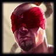
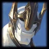
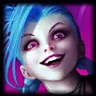
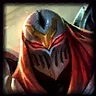
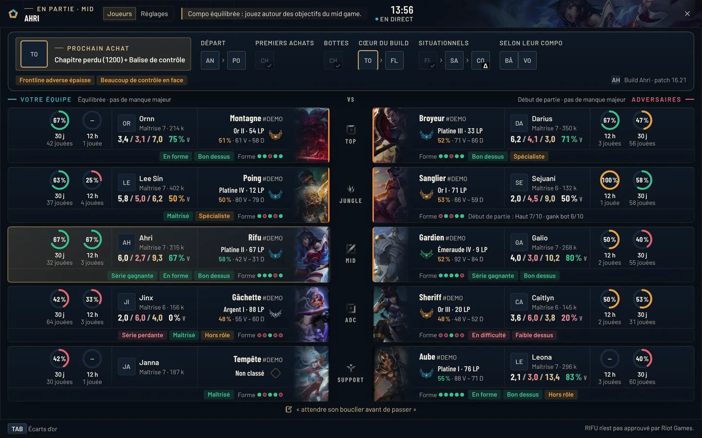
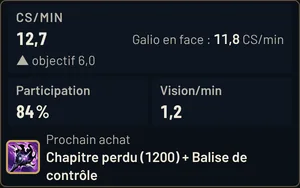
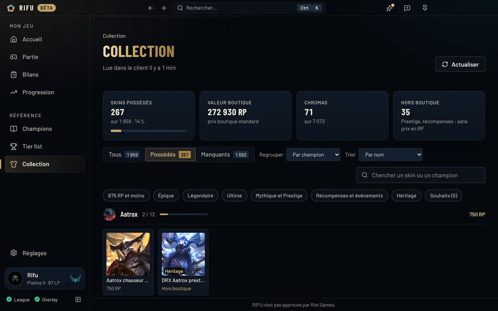

Faille de l'invocateur
- Options de votre pool selon les manques de la compo
- Écran de chargement, overlays et bilan complets
- Coop contre IA et parties personnalisées comprises
Il vous suit de la sélection au bilan : draft dans votre pool, scouting des dix joueurs, overlays en jeu et note de partie sur 100, en classée comme en ARAM. Il vous dit pourquoi, et vous laisse choisir. Tout est gratuit.


?

Démonstration illustrative. Dans l'app, l'analyse s'appuie sur les fiches des 173 champions, vos parties et les statistiques du patch.
De la sélection des champions au bilan, RIFU change d'écran en même temps que League. Survolez les points clés ou cliquez sur les repères numérotés pour inspecter chaque écran.
RIFU suit la draft en direct et vous dit ce que chaque champion de votre pool apporte de plus que les autres. Vous gardez toujours le dernier mot.

Un écran plein par-dessus le chargement de League, avec le plan de jeu en tête. Rang, forme, groupes : vous savez à qui vous avez affaire avant la première seconde.

Un HUD compact qui laisse passer vos clics, le panneau Ctrl + X et les écarts d'équipement au TAB. Trois préréglages : Minimal, Standard, Complet.


Chaque mesure est comparée au meilleur des dix joueurs, avec des poids propres à votre rôle. Un support est jugé sur sa vision, pas sur ses sbires.


RIFU relit chaque partie et retient ce qui se répète. Vous travaillez un point à la fois, et vous voyez quand il est réglé. Tout est comparé à votre propre niveau, jamais à d'autres joueurs.
Farm qui chute après la lane, avance perdue, trop de temps mort : le bilan le signale quand il revient d'une partie à l'autre.
RIFU propose l'objectif qui va avec, par exemple « 1 mort au plus avant 15 min ». Vous le prenez, ou aucun.
Quand vous ne le faites plus, il s'affiche « corrigé ». Vos points forts sont suivis de la même façon.

Le résumé de la semaine écoulée sur l'accueil, dès 5 parties.
Note moyenne, défaut qui revient et point fort, dès 3 parties relues.
Ce qui change entre les deux, à votre rôle le plus joué.
Farm, combat, vision, survie et objectifs, avec la courbe de vos LP sur 30 jours.
Les conseils changent avec le mode. En ARAM, ce ne sont plus des rôles qui comptent, mais le banc et ce qui manque à l'équipe.
Les tiers d'augments disent à quel point un augment est choisi, jamais combien il fait gagner. Vous pouvez couper les overlays mode par mode.
Ce qu'il fallait chercher dans plusieurs outils, dont un payant, RIFU le réunit au même endroit.
Podium des trois meilleurs, tiers S+ à D (S+ réservé aux cinq meilleurs du rôle) et filtre « Mon pool », calculés par RIFU sur les parties classées EUW Émeraude et plus.

Vos skins sur le total, la complétion, la valeur boutique en RP et vos chromas. Filtrez par champion ou par gamme : la collection reste sur votre PC.

RIFU ne lit jamais la mémoire du jeu, et ne touche aux fichiers de League que pour activer les replays, si vous le demandez.
Jamais « jouez X ». Les suggestions viennent de votre pool, pas d'une méta unique.
Aucune estimation de MMR, aucun joueur masqué identifié, aucun suivi des sorts adverses.
Historique, mémos et réglages restent sur votre PC. Vos retours ne partent qu'avec votre accord.
Le meilleur de Porofessor et de DPM, réuni dans une seule app gratuite.
| Fonction | RIFUApp Windows autonome | PorofessorApp Windows | DPMApp Windows |
|---|---|---|---|
| Prix de l'application | Gratuite | Gratuite avec pub | Premium, dès 3,33 €/mois |
| Conseils de draft selon les manques de votre compo, dans votre pool | Inclus | Non | Premium |
| Import des runes, des sorts et du build | Inclus | Inclus | Premium |
| Tags des joueurs au chargement (séries, one-trick…) | Inclus | Inclus | Non |
| Écart d'or et build conseillé en partie | Inclus | Inclus | Premium |
| Suivi des LP | Inclus | Non | Premium |
| Analyse détaillée après la partie | Inclus | Inclus | Premium |
| Collection de skins et valeur en RP | Inclus | Non | Premium |
D'après les offres publiques de Porofessor et de l'application Windows de DPM (réservée à l'abonnement Premium, 4,99 €/mois ou 39,99 €/an), relevées en octobre 2026 ; elles peuvent avoir évolué depuis. Porofessor et DPM sont des marques de leurs propriétaires respectifs. RIFU n'est affilié à aucun d'eux.
RIFU-Setup-….exe, depuis la page de téléchargement.Oui, entièrement. À terme, RIFU sera financé par une publicité discrète, uniquement dans la fenêtre RIFU et hors partie : jamais en sélection, au chargement, en jeu ni dans un overlay.
C'est son ambition. RIFU réunit dans une seule app le scouting de l'écran de chargement, l'assistant de draft, les overlays en jeu, le bilan de partie et le suivi des LP, sans abonnement. Son point fort : il explique ce qui manque à votre compo et propose des champions de votre propre pool.
RIFU n'utilise que les interfaces que Riot met à disposition des applications tierces : l'API Riot, l'API du client League et les données de la partie en cours. Il ne lit jamais la mémoire du jeu, ne touche aux fichiers de League que pour activer les replays si vous le demandez, et ne joue jamais à votre place.
Il suit les règles de Riot pour les applications tierces : plusieurs options plutôt qu'un choix imposé, pas d'estimation de MMR, pas d'identification des joueurs masqués en sélection, pas de suivi des sorts ni des ultimes adverses.
La bêta est fermée et se fait sur invitation, avec un code personnel par joueur. Rejoignez le Discord RIFU pour demander une place.
Chaque mesure de la partie (éliminations, participation, dégâts, or, sbires, vision, objectifs) est rapportée au meilleur des dix joueurs, puis pondérée selon votre rôle. Le meilleur de l'équipe gagnante est MVP ; le bilan nomme aussi le meilleur de l'autre équipe. Ce n'est ni un rang ni une estimation de MMR.
Non. Ils ne prennent jamais le focus du jeu, le HUD laisse passer vos clics, et vous réglez leur opacité (de 30 à 100 %) et leur taille. Pendant la bêta, ils demandent le mode fenêtré sans bordure ; le plein écran viendra avec la version signée.
Non. RIFU est une application autonome : elle n'a pas besoin du client Overwolf.
Pendant la bêta, l'installeur n'est pas encore signé par un certificat, donc Windows SmartScreen le signale. La signature est prévue pour la sortie publique. En attendant, téléchargez RIFU uniquement depuis ce site ou la page officielle des versions.
La Faille de l'invocateur (normales, classées, Coop contre IA, parties personnalisées), la Partie rapide, l'ARAM et l'ARAM Mayhem. En Arena, RIFU ne donne pas de conseil de draft, et les parties Brawl ne sont pas suivies. Serveur EUW, sur Windows 10 et 11.
Le minimum pour afficher les profils et l'écran de chargement. Tout le reste reste sur votre PC, et les retours ne partent que si vous l'activez. Le détail est dans la politique de confidentialité.
Le serveur de la communauté : c'est là que se passe la bêta.
Invitation discord.gg/CGRcbW4SVw
Gratuit, pour Windows. Rejoignez le Discord pour recevoir votre code bêta.